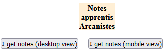
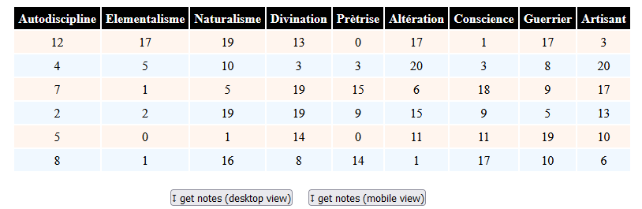
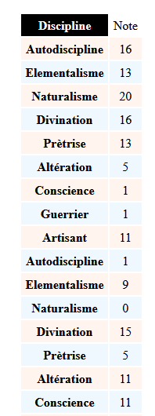
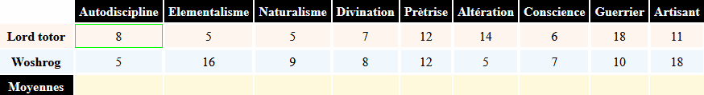

- Tableau fourni par le serveur
Dans ce premier exercice, le serveur nous fournit les données pour remplir un tableau au bon format, c'est-à-dire rangées de la même façon que nous l'avons fait lors du tp2, quand nous avons procédé aux extractions de données
- Mise en place
-
Videz le tableau initialement présent dans votre document
html, pour ne plus conserver que la balisetable, avec son identifiant, et lecaption(qui disparaîtra par la suite, par simplification, mais qui va nous permettre de confirmer que nous faisons bien les nettoyages nécessaires)Modifiez les deux boutons pour qu'ils affichent des messages adéquats, et qu'ils invoquent respectivement
get_table_in_desktop_view('table_unique')etget_table_in_mobile_view('table_unique')Déposez tous vos documents sur
webdevdans un répertoire de travail, et visualisez. Profitez-en pour vérifier que vos contributions aux pagesindex.htmletimages.htmlfonctionnent correctement. Désactivez les fonctionnalités issues du tp2 (notes en dessous de la moyenne, moyennes par discipline, tri des colonnes) -
Nous allons repartir des données telles qu'extraites lors de l'exercice 2.1. Ecrivez un script
phpqui, à base deecho, produit un affichage correct : pour une liste de disciplines fixée, des notes aléatroires (entiers, entre 0 et 20), pour un nombre aléatoire de mages (entre 5 et 15)Appelez ce script
notes_v1.php. Placez le surwebdev. Testez-le. (attention : dans votre navigateur, regardez le code source de la réponse)
-
- Fetch et contruction
-
Commençons par la fonction
. En premier lieu, faites une requêtefetchpour récupérer le json (voir cours), et contentez-vous d'afficher le json obtenu avecconsole.log. Vérifiez/Corrigez. -
Terminez en construisant le tableau, grâce au code correspondant déjà développé au tp2
Vérifiez qu'un second clic charge de nouvelles données
-
Faites de même pour la présentation smartphone

-
- Mise en place
- Tableau à partir d'une liste d'objets fournie par le serveur
Le serveur n'est a priori pas sensé nous préparer le travail. Ce sera d'autant moins probable si nous ne sommes pas en charge de son développement. Supposons donc à présent que les données à partir desquelles nous allons travailler sont 'cachées' dans un format que le serveur a choisi pour des raisons qui lui sont propres.
-
Pour nous simplifier la tâche, utilisons un générateur aléatoire déjà écrit https://www.jsongenerator.io/ (mais vous pouvez coder le vôtre en php, sur votre temps libre)
Générez une liste de quelques objets, suffisamment étoffés, puis copiez-la dans un fichier
.json. Posez ce fichier surwebdev, et vérifiez que votre navigateur y accède correctement.Les exemples du tp utilisent ce fichier, issu de ce template de génération aléatoire :
{ "disciplines" : [ "Autodiscipline", "Elementalisme", "Naturalisme", "Divination", "Prètrise", "Altération", "Conscience", "Guerrier", "Artisant" ], "premiere_annee": [ "repeat(5,15)", { "nom": "firstName() lastName()", "phoneNumber": "phoneNumber()", "username": "this.name.first-this.name.last", "email": "email(abralka.zam)", "notes": [ "repeat(9)", "int(0,20)" ] } ] } -
Nous voulons réutiliser le maximum de code de l'exercice précédent. Pour cela, écrivez une fonction
adpatateur_contenu(json), qui :-
Reçoit un paramètre contenant le json que vous avez généré et posé sur
webdev -
Retourne un nouvel objet manipulable comme celui attendu par les fonctions de l'exercice précédent, c'est-à-dire qui saura répondre quand le code lui demandera un
.colonnes, ou un.lignes, etc (du pur ducktyping en somme)
La façon la plus simple pour
adpatateur_contenuest de réellement construire un nouvel objet au format voulu, dans lequel seront placées/recopiées les informations provenant dujson. Dans un premier temps, testez cette approche. -
-
Dans ce dernier exercice, définir une seconde version de la fonction :
adpatateur_contenu_vproxy(json). Celle-ci ne va ni modifier l'objetjsonreçu, ni dupliquer les données qu'il contient. Au lieu de cela, elle va intercepter les accès aux données et simuler le comportement de l'objet créé par la précédente version.La première étape consiste à répertorier toutes les accès que nous voulons simuler. Il s'agit de :
-
.colonnes.length -
.colonnes[i](pour toutiun indice valide) -
.lignes.length -
.lignes[i] -
.lignes[i][j]
-
La fonction
adpatateur_contenu_vproxy(json)doit donc retourner un objet qui intercepte les accès en lecture pour les propriétés.colonneset.lignes. Définissez un objet qui utilisegetsur ces noms de propriétés et testez le avec desconsole.log -
On serait tenté d'utiliser la même technique pour intercepter les accès issus de
.colonnes, c'est-à-dire.colonnes.lengthet.colonnes[i]. Malheureusement, il peut y avoir un nombre arbitrairement grand d'indices. On ne pourrait donc pas écrire les interceptions in extenso. L'accès à.colonnesdoit donc retourner unProxy.Lors d'un accès en lecture à un
Proxy, sa méthodegetreçoit le nom de la propriété accédée. Utilisez ce paramètre pour répondre :-
Soit le
.disciplines.lengthde l'objetjson, quand.lengthest demandée -
Soit le
.disciplines[idx]de l'objetjson, quand[idx]est demandée
A nouveau, testez abondamment avec la console
-
-
Pour traiter les accès issus de
.lignes, vous répéterez cette dernière technique. Vous obtiendrez unProxyqui crée desProxy! ✈➰✈
-
-
- Vous débordez d'énergie ? (optionnel)
Reprenez la mise en jambe du TP précédent pour ajouter des animations (et des temporisations) à chaque étape de calcul
Vous pouvez aborder le problème avec uniquement des
Promises. Ou vous pouvez obtenir un code plus lisible avecawait/async.Voici ce que l'on veut obtenir : 